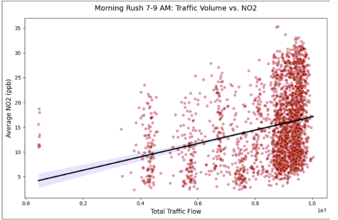

This project investigated the relationship between freeway traffic patterns and NO₂ pollution levels in Los Angeles and Ventura counties.
Can traffic volume and time of day be used to predict changes in hourly NO₂ pollution levels?
Our hypothesis was that higher traffic volumes and specific times of day would be associated with higher NO₂ levels.
Traffic and air quality data were cleaned and combined to analyze the relationship between traffic patterns and NO₂ levels. Random Forest and LSTM models were used to compare predictive performance and identify important factors associated with pollution levels.

Figure 3. Morning Rush Hour (7–9 AM) Total Traffic Flow plotted against average NO₂ concentrations, illustrating a positive upward trend.)
The analysis found a measurable relationship between freeway traffic and NO₂ levels. Traffic volume and time of day were the strongest Random Forest predictors, while the LSTM model achieved a lower RMSE and provided more accurate predictions by accounting for pollution patterns over time.